<meta charset="utf-8">
<meta name="viewport" content="width=device-width, initial-scale=1">
<title>Boraoke — State of the Product, 7 Aug 2026</title>
<style>
  :root{
    --bg:#0b0c0e; --panel:#141619; --panel2:#1b1e22; --line:#2a2f36;
    --text:#f2f4f7; --muted:#a5adba; --dim:#7c8595;
    --accent:#ee5a64; --accent-strong:#d92330;
    --ok:#4ade80; --warn:#fbbf24; --bad:#f87171; --info:#60a5fa;
    --maxw:1180px;
  }
  *{box-sizing:border-box}
  body{margin:0;background:var(--bg);color:var(--text);
    font:16px/1.65 ui-sans-serif,system-ui,-apple-system,"Segoe UI",Roboto,Helvetica,Arial,sans-serif;
    -webkit-font-smoothing:antialiased}
  .wrap{max-width:var(--maxw);margin:0 auto;padding:0 24px}
  a{color:var(--accent)}
  h1,h2,h3{line-height:1.2;margin:0}
  h1{font-size:clamp(30px,5vw,46px);letter-spacing:-.02em}
  h2{font-size:clamp(23px,3.4vw,31px);letter-spacing:-.015em;margin-bottom:6px}
  h3{font-size:19px;margin-bottom:8px}
  p{margin:12px 0}
  code{background:#000;border:1px solid var(--line);border-radius:5px;padding:1px 6px;font-size:.87em}

  header.hero{border-bottom:1px solid var(--line);padding:56px 0 40px;
    background:radial-gradient(1100px 420px at 15% -10%,rgba(238,90,100,.16),transparent 60%)}
  .eyebrow{color:var(--accent);font-weight:700;letter-spacing:.14em;text-transform:uppercase;font-size:12.5px}
  .lede{color:var(--muted);font-size:19px;max-width:70ch;margin-top:14px}

  nav.toc{position:sticky;top:0;z-index:50;background:rgba(11,12,14,.93);
    backdrop-filter:blur(12px);border-bottom:1px solid var(--line);padding:11px 0}
  nav.toc .wrap{display:flex;gap:8px;flex-wrap:wrap}
  nav.toc a{color:var(--muted);text-decoration:none;font-size:13.5px;font-weight:600;
    padding:6px 11px;border-radius:999px;border:1px solid transparent;white-space:nowrap}
  nav.toc a:hover{color:var(--text);border-color:var(--line);background:var(--panel)}

  section{padding:52px 0;border-bottom:1px solid var(--line)}
  .sub{color:var(--muted);max-width:78ch;margin-top:4px}

  .stats{display:grid;grid-template-columns:repeat(auto-fit,minmax(158px,1fr));gap:14px;margin-top:26px}
  .stat{background:var(--panel);border:1px solid var(--line);border-radius:12px;padding:17px}
  .stat .n{font-size:31px;font-weight:800;letter-spacing:-.02em}
  .stat .l{color:var(--dim);font-size:12.5px;margin-top:3px;line-height:1.4}

  .grid{display:grid;gap:18px}
  .g2{grid-template-columns:repeat(auto-fit,minmax(330px,1fr))}
  .g3{grid-template-columns:repeat(auto-fit,minmax(258px,1fr))}

  figure{margin:0;background:var(--panel);border:1px solid var(--line);border-radius:12px;overflow:hidden}
  figure img{display:block;width:100%;height:auto;background:#000}
  figcaption{padding:11px 14px;color:var(--muted);font-size:13.5px;border-top:1px solid var(--line)}
  figcaption b{color:var(--text);font-weight:650}
  .shot-mobile img{max-height:620px;object-fit:contain;object-position:top}

  .card{background:var(--panel);border:1px solid var(--line);border-radius:12px;padding:20px}
  .card.rec{border-color:var(--accent);box-shadow:0 0 0 1px rgba(238,90,100,.28)}

  .tag{display:inline-block;font-size:11.5px;font-weight:700;letter-spacing:.05em;
    text-transform:uppercase;padding:3px 9px;border-radius:999px;border:1px solid var(--line);
    color:var(--muted);background:var(--panel2)}
  .tag.rec{color:#08130b;background:var(--ok);border-color:var(--ok)}
  .tag.bad{color:#1a0505;background:var(--bad);border-color:var(--bad)}
  .tag.warn{color:#1a1203;background:var(--warn);border-color:var(--warn)}
  .tag.info{color:#04101f;background:var(--info);border-color:var(--info)}

  table{width:100%;border-collapse:collapse;font-size:14px;margin-top:16px}
  .scroll{overflow-x:auto;-webkit-overflow-scrolling:touch}
  th,td{text-align:left;padding:9px 11px;border-bottom:1px solid var(--line);vertical-align:top}
  th{color:var(--dim);font-size:12px;text-transform:uppercase;letter-spacing:.07em;
    position:sticky;top:0;background:var(--bg)}
  tbody tr:hover{background:var(--panel)}
  td.mono{font-family:ui-monospace,SFMono-Regular,Menlo,monospace;font-size:13px;white-space:nowrap}
  .pass{color:var(--ok);font-weight:700}
  .fail{color:var(--bad);font-weight:700}

  .callout{border-left:3px solid var(--accent);background:var(--panel);
    border-radius:0 12px 12px 0;padding:16px 20px;margin:22px 0}
  .callout.warn{border-left-color:var(--warn)}
  .callout.bad{border-left-color:var(--bad)}
  .callout h3{margin-bottom:6px}

  ul{margin:12px 0;padding-left:20px}
  li{margin:7px 0}
  .opts{list-style:none;padding:0;margin:14px 0 0}
  .opts li{display:flex;gap:11px;align-items:flex-start;margin:9px 0}
  .opts .k{flex:none;width:22px;height:22px;border-radius:6px;background:var(--panel2);
    border:1px solid var(--line);display:grid;place-items:center;font-size:12px;font-weight:800;color:var(--muted)}
  .opts li.pick .k{background:var(--ok);color:#08130b;border-color:var(--ok)}

  .phase{display:grid;grid-template-columns:auto 1fr;gap:16px;align-items:start;
    padding:16px 0;border-bottom:1px dashed var(--line)}
  .phase:last-child{border-bottom:0}
  .pnum{width:46px;height:46px;border-radius:11px;display:grid;place-items:center;
    font-weight:800;background:var(--panel2);border:1px solid var(--line);color:var(--muted)}
  .pnum.now{background:var(--accent-strong);border-color:var(--accent-strong);color:#fff}
  .pnum.done{background:var(--ok);border-color:var(--ok);color:#08130b}

  footer{padding:40px 0 70px;color:var(--dim);font-size:13.5px}
  @media(max-width:640px){ section{padding:38px 0} .wrap{padding:0 16px} }
</style>

<header class="hero"><div class="wrap">
  <div class="eyebrow">Boraoke · Product Review</div>
  <h1>State of the product</h1>
  <p class="lede">Everything shipped, everything open, and what the app actually looks like today — captured live from the running app on 7 August 2026. Plus three landing-page directions and the accent-colour decision.</p>
  <div class="stats">
    <div class="stat"><div class="n">48</div><div class="l">PRs merged all-time</div></div>
    <div class="stat"><div class="n">10</div><div class="l">merged in the last 7 days</div></div>
    <div class="stat"><div class="n">0</div><div class="l">open PRs · worktrees · stray branches</div></div>
    <div class="stat"><div class="n">683</div><div class="l">unit tests passing</div></div>
    <div class="stat"><div class="n">61</div><div class="l">e2e tests <span style="color:var(--warn)">+2 skipped</span></div></div>
    <div class="stat"><div class="n">1<span style="color:var(--dim);font-size:20px">/5</span></div><div class="l">phases complete</div></div>
  </div>
</div></header>

<nav class="toc"><div class="wrap">
  <a href="#today">Today</a><a href="#tour">App tour</a><a href="#landing">Landing rethink</a>
  <a href="#contrast">Accent fix</a><a href="#phases">Phases</a><a href="#backlog">Backlog</a>
  <a href="#decisions">Your decisions</a><a href="#defects">Defects found</a>
</div></nav>

<!-- ───────────────────────── TODAY ───────────────────────── -->
<section id="today"><div class="wrap">
  <h2>Where the product is today</h2>
  <p class="sub">What a venue owner can actually do right now, live at boraoke.com — in plain language, no ticket numbers.</p>

  <div class="grid g2" style="margin-top:24px">
    <div class="card">
      <h3 style="color:var(--ok)">✓ Works today</h3>
      <ul>
        <li>Create a karaoke room in seconds — free, no signup, no app install.</li>
        <li>Guests scan a <b>QR code</b>, enter a nickname and table, and add songs.</li>
        <li>Songs come from <b>YouTube search</b> in-app, or a pasted link — which now warns instantly if the video won't embed.</li>
        <li>The venue TV runs a <b>fullscreen kiosk</b> that auto-advances, skips unplayable videos instead of wedging, and self-heals an expired screen token.</li>
        <li><b>Three fair rotation modes</b> — full karaoke, 2 per table, 1 per person — so nobody hogs the mic.</li>
        <li>Host panel: skip, remove, reorder, pause, plus optional <b>moderation</b> (approve before it hits the queue).</li>
        <li><b>Durable</b> — a crash, a dead phone or a redeploy doesn't lose the queue.</li>
        <li>Read-only analytics, an in-app feedback widget, and three languages (pt-BR / en / es).</li>
      </ul>
    </div>
    <div class="card">
      <h3 style="color:var(--warn)">The honest gaps</h3>
      <ul>
        <li><b>There are no accounts.</b> A host can't own their venue or see history on a new device. Everything is anonymous device-memory. This is the single biggest hole — and it is exactly what Phase 2 is.</li>
        <li><b>Nothing stops a bot.</b> Room creation, joining and feedback are wide open beyond per-IP velocity caps.</li>
        <li><b>No dark/light mode</b> or personality customisation — one fixed dark skin.</li>
        <li><b>It still assumes "bar."</b> Copy and defaults are bar-shaped; a wedding or condo party gets bar language.</li>
        <li><b>YouTube search will hit a wall</b> — see the quota callout below.</li>
        <li><b>No money exists</b> anywhere in the product yet.</li>
        <li><b>Feedback is one-way</b> — guests submit, nothing mines it, nobody hears "your suggestion shipped."</li>
        <li><b>Two accessibility failures are live</b> on every primary button.</li>
      </ul>
    </div>
  </div>

  <div class="callout warn">
    <h3>⚠ The quietest risk on the board: YouTube quota</h3>
    <p style="margin-bottom:0">The default quota allows roughly <b>99 searches per day across every venue combined</b> (10,000 units ÷ ~101 per search). One busy bar night consumes about 80% of that — for everybody at once. The cross-instance cache softens the burn but cannot raise the ceiling. <b>The quota-increase form has been drafted since early July and never filed.</b> Filing costs ten minutes and takes weeks to approve, so continuing not to file it is the only genuinely irreversible option here.</p>
  </div>
</div></section>

<!-- ───────────────────────── APP TOUR ───────────────────────── -->
<section id="tour"><div class="wrap">
  <h2>The app today — real screenshots</h2>
  <p class="sub">Captured from the running app against a real room created through the real flow. Nothing mocked, edited or staged. Click any image to open it full size.</p>

  <h3 style="margin-top:34px">Landing &amp; room creation</h3>
  <div class="grid g3" style="margin-top:14px">
    <figure><a href="../evidence/app-tour/landing-desktop.png">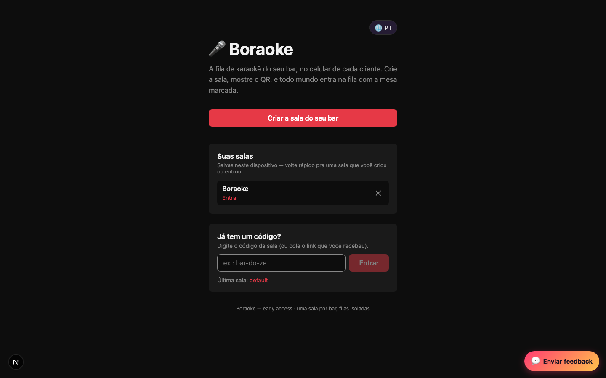</a>
      <figcaption><b>Landing today.</b> A title, a tagline, one CTA and a join box. This is the whole first impression — and the subject of the rethink below.</figcaption></figure>
    <figure><a href="../evidence/app-tour/room-create-form-desktop.png">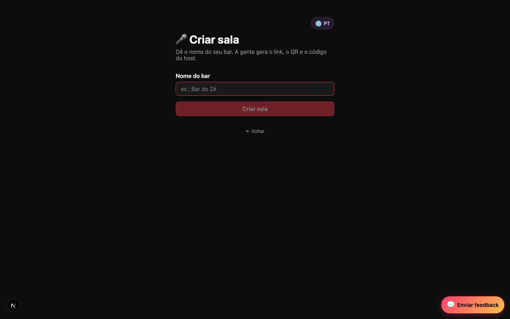</a>
      <figcaption><b>Create a room.</b> One field: the venue name.</figcaption></figure>
    <figure><a href="../evidence/app-tour/room-created-result-desktop.png">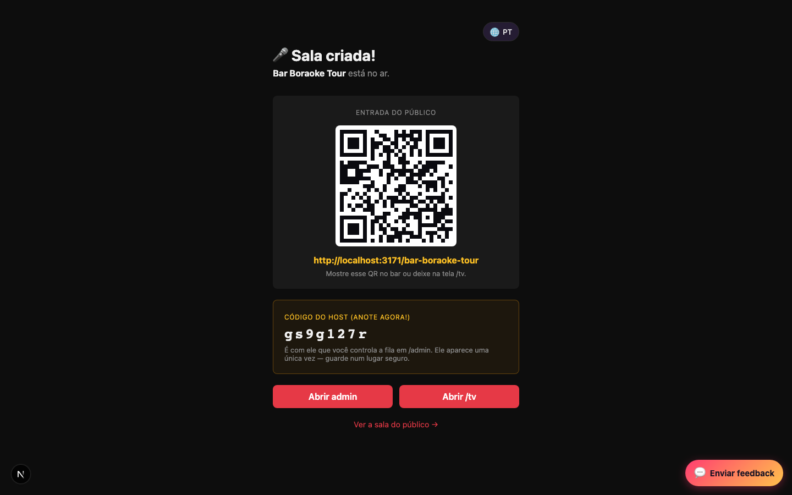</a>
      <figcaption><b>Room created.</b> Real QR of the join URL, the URL itself, and the one-time host code.</figcaption></figure>
  </div>

  <h3 style="margin-top:34px">The venue screen</h3>
  <div class="grid g2" style="margin-top:14px">
    <figure><a href="../evidence/app-tour/tv-idle-poster-1920x1080.png">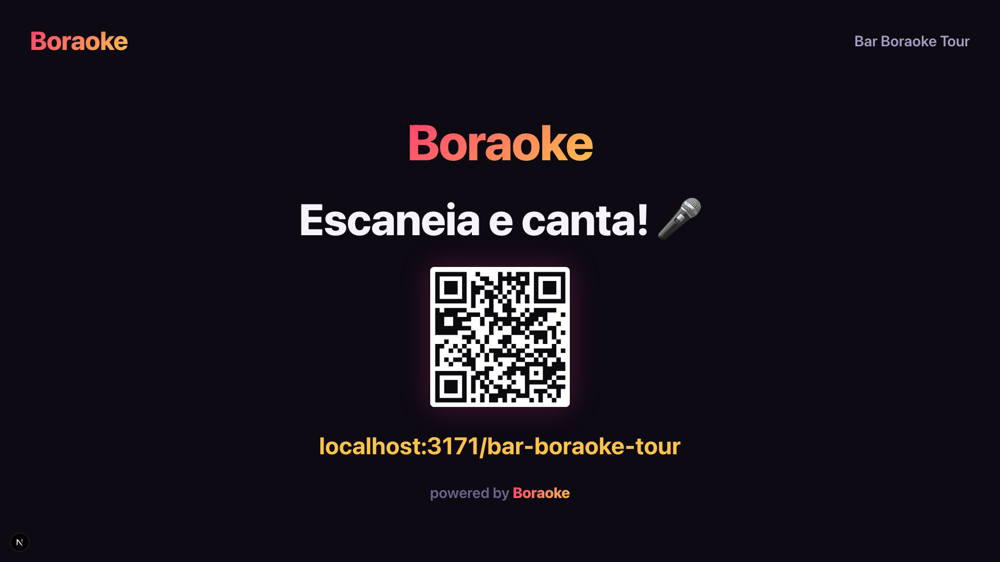</a>
      <figcaption><b>Idle — the recruitment poster.</b> What the TV shows before anyone has queued a song: a giant QR and "Escaneia e canta!"</figcaption></figure>
    <figure><a href="../evidence/app-tour/tv-now-playing-1920x1080.png">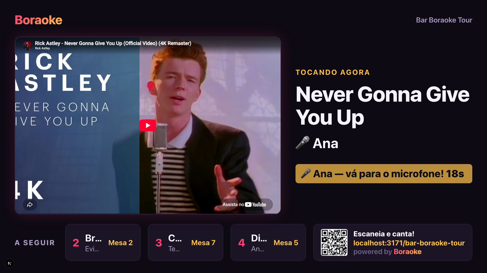</a>
      <figcaption><b>Now playing.</b> Embedded player, the singer called to the mic, and the "A seguir" rail. <span style="color:var(--bad)">The rail truncates names to ~2 characters — see Defects.</span></figcaption></figure>
  </div>

  <h3 style="margin-top:34px">The guest experience</h3>
  <div class="grid g3" style="margin-top:14px">
    <figure class="shot-mobile"><a href="../evidence/app-tour/patron-join-nickname-mobile.png">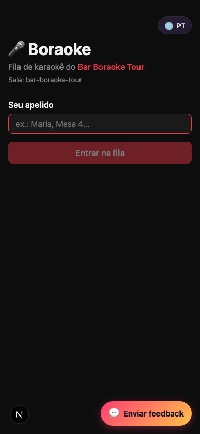</a>
      <figcaption><b>Join gate.</b> Nickname and table — no signup, no app.</figcaption></figure>
    <figure class="shot-mobile"><a href="../evidence/app-tour/patron-room-populated-queue-mobile.png">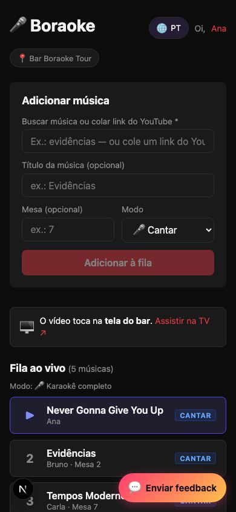</a>
      <figcaption><b>Live queue.</b> Five singers across four tables. <span style="color:var(--bad)">The feedback pill overlaps the last row — see Defects.</span></figcaption></figure>
    <figure><a href="../evidence/app-tour/patron-song-search-degraded-desktop.png">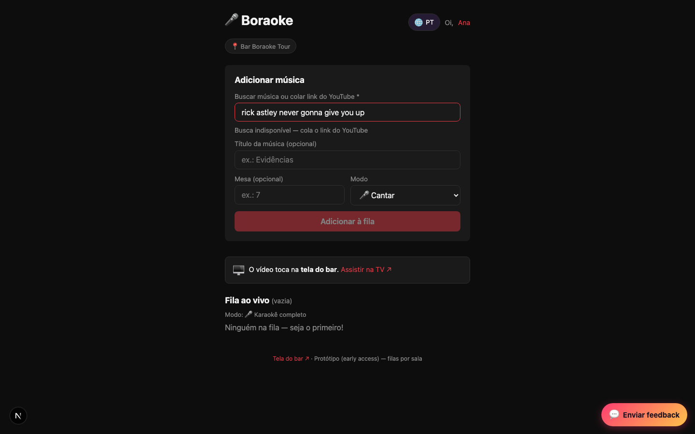</a>
      <figcaption><b>Search without an API key.</b> The honest degraded state — "Busca indisponível, cola o link". Captured rather than faked, because no key exists locally.</figcaption></figure>
  </div>

  <h3 style="margin-top:34px">Host controls</h3>
  <div class="grid g2" style="margin-top:14px">
    <figure><a href="../evidence/app-tour/admin-dashboard-populated-queue-desktop.png">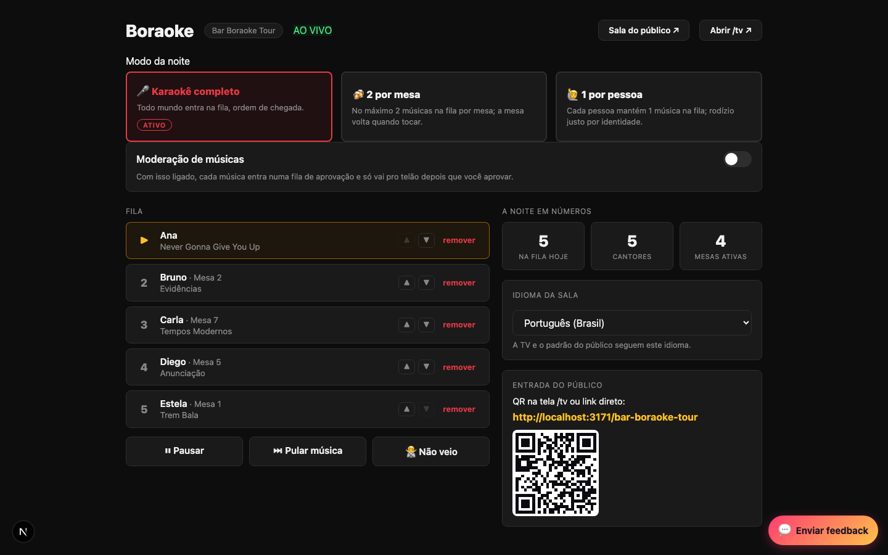</a>
      <figcaption><b>Host panel.</b> Per-row reorder and remove, transport controls (pause / skip / no-show), and live night stats — 5 queued, 5 singers, 4 active tables.</figcaption></figure>
    <figure><a href="../evidence/app-tour/admin-mode-switcher-per-table-active-desktop.png">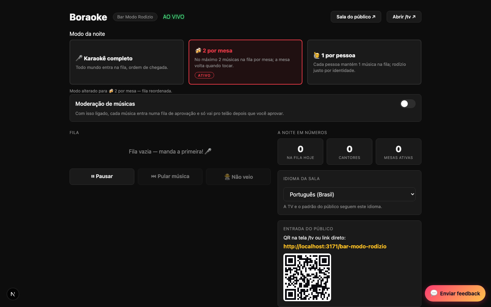</a>
      <figcaption><b>Fair rotation — the real differentiator.</b> Switching to "2 por mesa" reorders the queue live. Completely invisible on the landing page today.</figcaption></figure>
  </div>
  <div class="grid g3" style="margin-top:18px">
    <figure><a href="../evidence/app-tour/admin-pending-approval-card-desktop.png">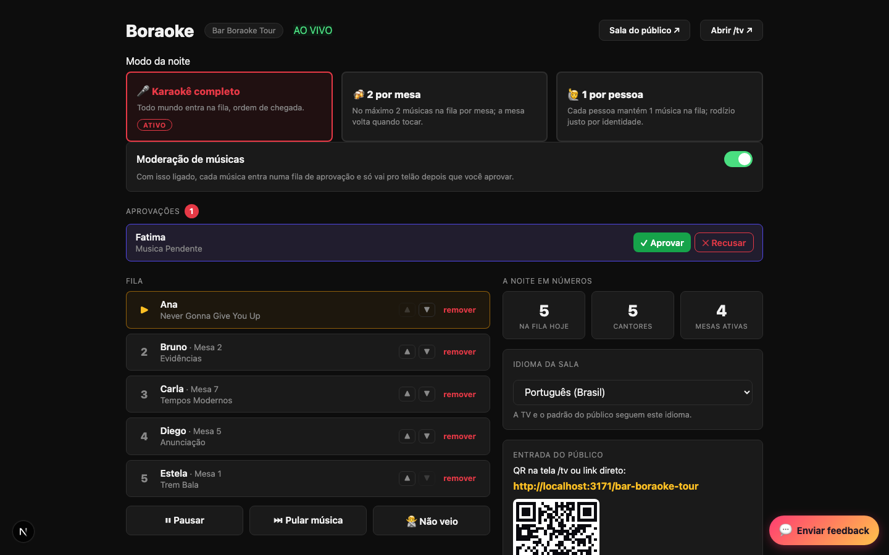</a>
      <figcaption><b>Moderation on.</b> Host approves or refuses before a song reaches the queue.</figcaption></figure>
    <figure class="shot-mobile"><a href="../evidence/app-tour/patron-pending-approval-mobile.png">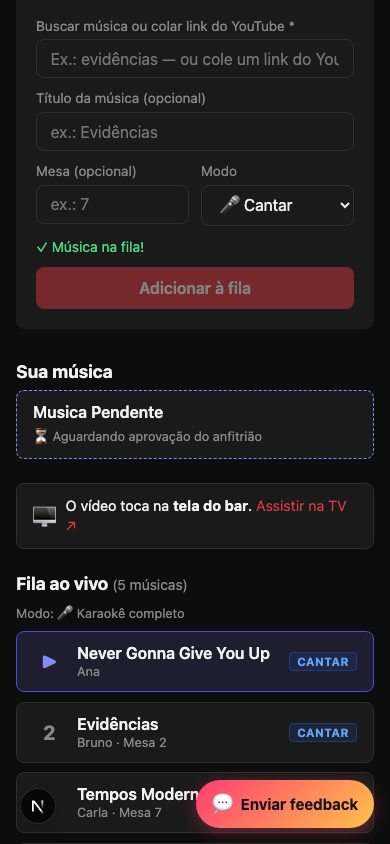</a>
      <figcaption><b>Guest side of moderation.</b> "Aguardando aprovação do anfitrião."</figcaption></figure>
    <figure><a href="../evidence/app-tour/analytics-dashboard-desktop.png">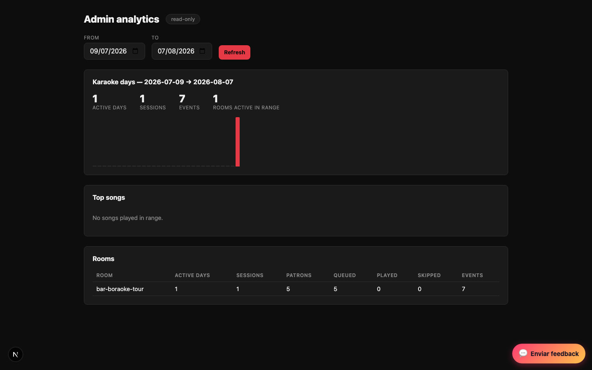</a>
      <figcaption><b>Analytics.</b> Karaoke days, top songs, per-room activity. Sparse here because only one tour session exists — not backfilled to look fuller.</figcaption></figure>
  </div>
</div></section>

<!-- ───────────────────────── LANDING ───────────────────────── -->
<section id="landing"><div class="wrap">
  <h2>Landing page rethink</h2>
  <p class="sub">You flagged that the homepage says little more than "Criar a sala do meu bar". Here's what a designer found, and three genuinely different directions.</p>

  <div class="callout">
    <h3>The diagnosis</h3>
    <p>The live page never mentions the TV screen, YouTube search, the three rotation modes, host controls, sing-vs-listen, the free promise, or any venue beyond a bar. The footer literally reads <i>"uma sala por bar"</i>.</p>
    <p style="margin-bottom:0"><b>A visitor who isn't a bar owner has no reason to stay, and a bar owner has no idea what they're getting.</b> The bar-only framing also fights the roadmap's own multi-venue direction. Everything the mockups claim is verified as already shipped — no unbuilt feature is advertised.</p>
  </div>

  <div class="grid g2" style="margin-top:26px">
    <figure><a href="../design/landing-rethink/screenshots/current-desktop.png">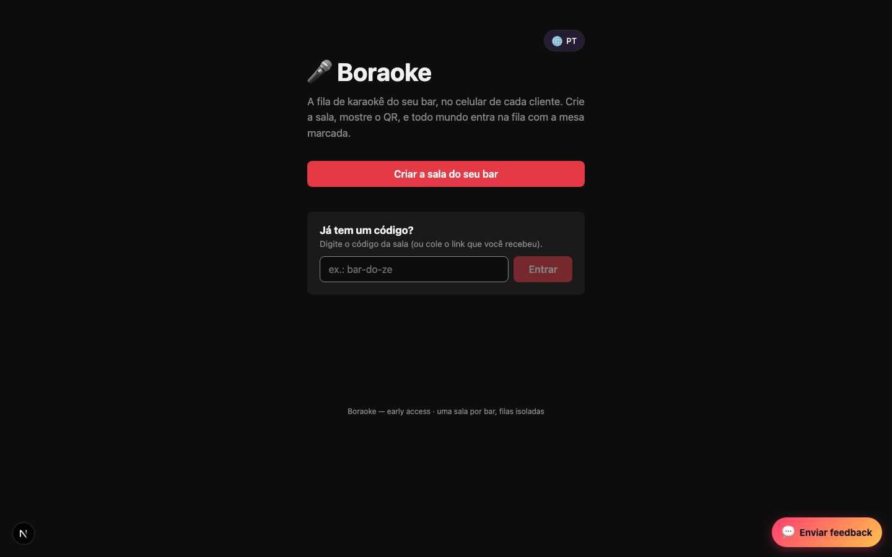</a>
      <figcaption><b>Before</b> — today's live page.</figcaption></figure>
    <figure><a href="../design/landing-rethink/screenshots/direction-2-demo-vivo-desktop.png">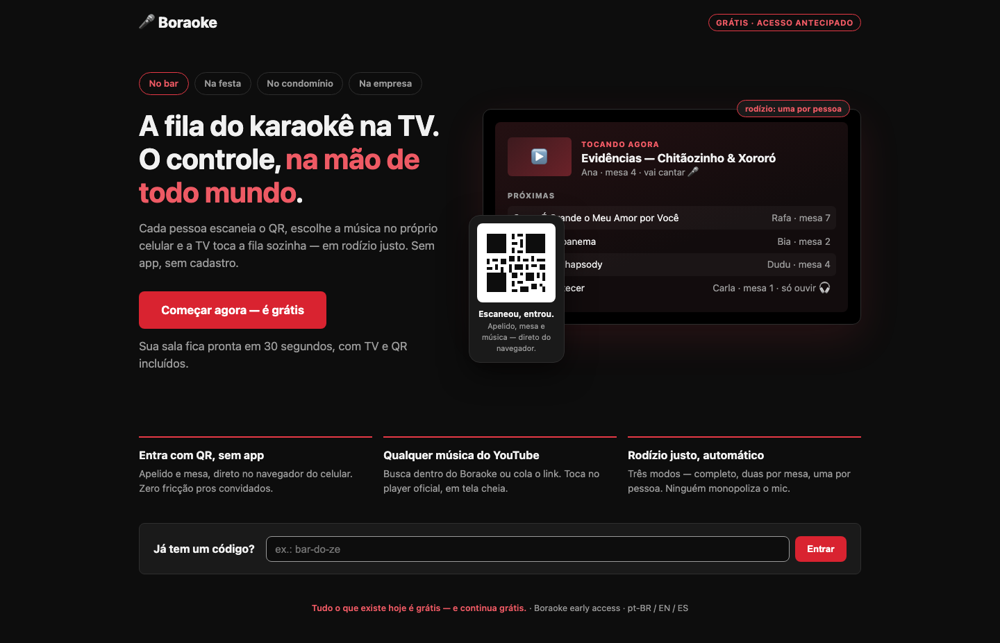</a>
      <figcaption><b>After</b> — Direction 2, the recommended one.</figcaption></figure>
  </div>

  <div class="grid g3" style="margin-top:30px">
    <div class="card">
      <span class="tag">Direction 1</span>
      <h3 style="margin-top:12px">Pra qualquer festa</h3>
      <p style="color:var(--muted);font-size:14.5px">A full marketing page that makes the venue-agnostic move explicit: how-it-works steps, a named fairness section with the three modes as cards, and an equal-weight venue grid (bar / festa / condomínio / empresa).</p>
      <p style="font-size:14px"><b>CTA:</b> "Criar minha sala grátis"<br><b>Risk:</b> longest page; slightly over-signals generality before per-venue presets exist.</p>
    </div>
    <div class="card rec">
      <span class="tag rec">Recommended</span> <span class="tag">Direction 2</span>
      <h3 style="margin-top:12px">Demo vivo</h3>
      <p style="color:var(--muted);font-size:14.5px">The hero <i>is</i> the product: a mocked TV screen with now-playing and an up-next rail, a phone card with the QR hanging off it. One glance explains QR-join, the queue, tables and fairness before a word is read.</p>
      <p style="font-size:14px"><b>CTA:</b> "Começar agora — é grátis"<br><b>Why:</b> boraoke's magic is visual. The only direction where a visitor <i>sees</i> the product in second one, the shortest page, and the venue chips grow naturally into Phase-3 presets.</p>
    </div>
    <div class="card">
      <span class="tag">Direction 3</span>
      <h3 style="margin-top:12px">Balcão do dono</h3>
      <p style="color:var(--muted);font-size:14.5px">The deliberate counter-proposal: speak only to tonight's actual buyer. Pain-led headline ("aposenta o caderninho"), a what-you-get checklist, venue-widening demoted to one aside.</p>
      <p style="font-size:14px"><b>CTA:</b> keeps "Criar a sala do meu bar"<br><b>Risk:</b> perpetuates the bar-only first impression; strongest single-persona conversion, weakest strategic fit.</p>
    </div>
  </div>

  <div class="grid g3" style="margin-top:22px">
    <figure><a href="../design/landing-rethink/screenshots/direction-1-qualquer-festa-desktop.png">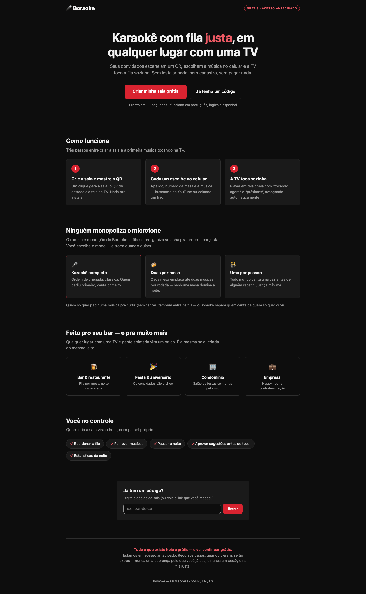</a><figcaption>Direction 1 — Pra qualquer festa</figcaption></figure>
    <figure><a href="../design/landing-rethink/screenshots/direction-2-demo-vivo-mobile.png">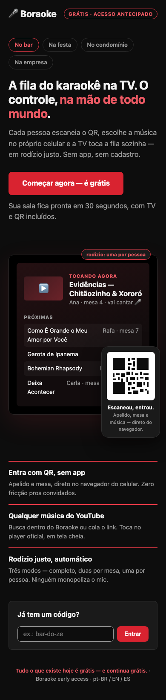</a><figcaption>Direction 2 on mobile</figcaption></figure>
    <figure><a href="../design/landing-rethink/screenshots/direction-3-balcao-do-dono-desktop.png">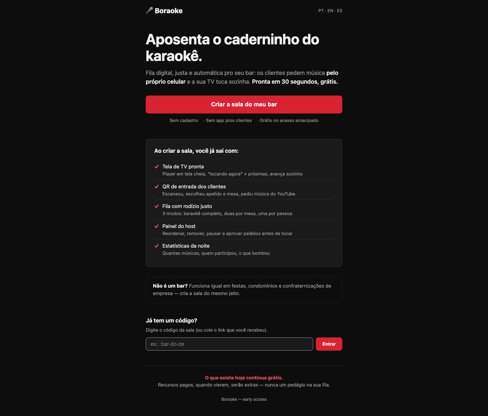</a><figcaption>Direction 3 — Balcão do dono</figcaption></figure>
  </div>
  <p style="color:var(--dim);font-size:13.5px;margin-top:16px">All three mockups are self-contained HTML you can open directly: <code>work/design/landing-rethink/mockup-*.html</code></p>
</div></section>

<!-- ───────────────────────── CONTRAST ───────────────────────── -->
<section id="contrast"><div class="wrap">
  <h2>The accent-colour fix <span style="color:var(--dim);font-weight:400;font-size:.6em">TICKET-66</span></h2>
  <p class="sub">You asked whether this could be fixed with design help. It can — but it needs one decision from you, because the honest answer is that the obvious fix is impossible.</p>

  <div class="callout bad">
    <h3>Why "just darken the red" cannot work</h3>
    <p style="margin-bottom:0">White text on the accent needs a <b>darker</b> red to reach 4.5:1. The accent used <i>as</i> text on dark backgrounds needs a <b>lighter</b> one. These are mathematically incompatible for a single hex — every candidate that fixes the button breaks the text. The audit also found a <b>third, latent failure the test suite doesn't yet cover</b>: <code>#e63946</code> as text on cards measures 4.18:1, affecting admin and guest error text and saved-room links.</p>
  </div>

  <div class="scroll"><table>
    <thead><tr><th>Where</th><th>Pair</th><th>Now</th><th>Option B (recommended)</th></tr></thead>
    <tbody>
      <tr><td>Every primary button</td><td class="mono">#fff on accent</td><td class="fail">4.17 ✗</td><td class="pass">4.96 ✓ <span style="color:var(--dim)">on #d92330</span></td></tr>
      <tr><td>Admin mode-switcher label</td><td class="mono">accent on tint</td><td class="fail">4.37 ✗</td><td class="pass">5.45 ✓ <span style="color:var(--dim)">via accent-text</span></td></tr>
      <tr><td>Error text on cards <span class="tag warn">latent</span></td><td class="mono">accent on surface</td><td class="fail">4.18 ✗</td><td class="pass">5.21 ✓</td></tr>
      <tr><td>Borders, focus rings</td><td class="mono">accent on bg</td><td class="pass">4.66 ✓</td><td class="pass">unchanged</td></tr>
    </tbody>
  </table></div>

  <div class="grid g2" style="margin-top:26px">
    <div class="card rec">
      <span class="tag rec">Recommended</span>
      <h3 style="margin-top:12px">Option B — split the token by role</h3>
      <p style="font-size:14.5px;color:var(--muted)">Keep <code>#e63946</code> as the brand hue for borders, focus rings and large text. Add <code>--accent-strong #d92330</code> for filled buttons and <code>--accent-text #ee5a64</code> for accent-as-text.</p>
      <p style="font-size:14px">~6-line CSS diff. Fixes both known failures <b>and</b> the latent third one. <code>#d92330</code> is the same hue, ~7% darker — side by side it still reads as the brand red.</p>
    </div>
    <div class="card">
      <span class="tag">Alternative</span>
      <h3 style="margin-top:12px">Option A — smallest possible diff</h3>
      <p style="font-size:14.5px;color:var(--muted)">Three lines, no new tokens: buttons use the existing hover red, and the mode-switcher tint gets lighter.</p>
      <p style="font-size:14px">Leaves the latent failure unfixed, buttons go noticeably darker and moodier than the brand red, and the mode-switcher clears the bar by only <b>0.02</b> — any future background tweak re-breaks it.</p>
    </div>
  </div>
  <p style="color:var(--dim);font-size:13.5px;margin-top:16px">Either way it's a token-level CSS change, and the acceptance test already exists — the dev un-skips the two <code>test.fixme</code> blocks that are currently documenting the failures.</p>
</div></section>

<!-- ───────────────────────── PHASES ───────────────────────── -->
<section id="phases"><div class="wrap">
  <h2>The phases — and what Phase 2 actually is</h2>
  <p class="sub">You asked what Phase 2 means. It is <b>Accounts &amp; Identity</b> — not the venue-generalization arc.</p>

  <div style="margin-top:24px">
    <div class="phase"><div class="pnum done">1</div><div>
      <h3>Karaoke-core hardening <span class="tag rec">~complete</span></h3>
      <p style="color:var(--muted);margin:6px 0 0">Make the live product survive a crowded, hostile night. Races, rate limits, quota caching, moderation and the TV watchdog are all hardened. <b>One item left: bot prevention</b> — which gates Phase 2 from outside it. Cloudflare Turnstile was chosen yesterday, so it is unblocked.</p>
    </div></div>

    <div class="phase"><div class="pnum now">2</div><div>
      <h3>Accounts &amp; Identity <span class="tag warn">0% started · unblocked</span></h3>
      <p style="color:var(--muted);margin:6px 0 10px"><b>Hosts sign in with Google, retroactively claim every room and stat they created anonymously, and keep their history across devices — while guests stay anonymous unless they choose otherwise.</b></p>
      <div class="scroll"><table style="margin-top:4px">
        <thead><tr><th>Ticket</th><th>What</th><th>Status</th></tr></thead>
        <tbody>
          <tr><td class="mono">TICKET-28</td><td>Google OAuth, account ↔ anonymous-id linking, retroactive claim, account page, LGPD groundwork</td><td><span class="tag warn">the real Phase 2</span></td></tr>
          <tr><td class="mono">TICKET-29</td><td>Theming — dark/light plus venue personality presets</td><td><span class="tag">not started</span></td></tr>
          <tr><td class="mono">TICKET-30</td><td>Three languages + switcher</td><td><span class="tag rec">shipped early</span></td></tr>
        </tbody>
      </table></div>
      <p style="color:var(--muted);margin-top:12px"><b>Unlocks:</b> host ownership — the precondition for ever charging a venue — plus the auto-sync half of session recovery, and the LGPD/privacy pages.<br>
      <b>One thing needed from you:</b> add <code>boraoke.com</code> to the Google OAuth console origins. Credentials were handed over long ago; the console entry was never made.</p>
    </div></div>

    <div class="phase"><div class="pnum">3</div><div>
      <h3>Venue-type generalization</h3>
      <p style="color:var(--muted);margin:6px 0 0">The product stops assuming "bar" — host picks party / condo / corporate and gets the right copy, theme, rotation defaults and feature flags. Depends on theming landing first.</p>
    </div></div>

    <div class="phase"><div class="pnum">4</div><div>
      <h3>Money</h3>
      <p style="color:var(--muted);margin:6px 0 0">Mercado Pago + Pix, pay-to-boost, dedications, menu-ordering pilot. Cannot ship before Phase 2 — you can't pay a venue that has no account.</p>
    </div></div>

    <div class="phase"><div class="pnum">5</div><div>
      <h3>The feedback loop</h3>
      <p style="color:var(--muted);margin:6px 0 0">Mine feedback and telemetry into tickets, then tell the guest "your suggestion shipped". A founding pillar of the product, currently demoted to a late wave — worth a deliberate decision about pulling it forward.</p>
    </div></div>
  </div>

  <div class="callout">
    <p style="margin:0"><b>Correction worth flagging:</b> bot prevention is the last item of <i>Phase 1</i>, not part of Phase 2. It's easy to conflate because it blocks Phase 2 — but it gates it from outside rather than belonging to it. Venue types are Phase 3, not Phase 2.</p>
  </div>
</div></section>

<!-- ───────────────────────── BACKLOG ───────────────────────── -->
<section id="backlog"><div class="wrap">
  <h2>The full backlog</h2>
  <p class="sub">Everything open. "Informal" means it exists only as a board bullet — real work with no ticket file behind it.</p>

  <div class="scroll"><table>
    <thead><tr><th>ID</th><th>Title</th><th>Pri</th><th>Size</th><th>Phase</th><th>Blocked on</th></tr></thead>
    <tbody>
      <tr><td class="mono">TICKET-27</td><td>Bot prevention — Turnstile + velocity caps</td><td>P1</td><td>M</td><td>1</td><td><span class="tag rec">just unblocked</span></td></tr>
      <tr><td class="mono">TICKET-28</td><td>Host accounts — Google OAuth + retroactive claim</td><td>P1</td><td>L</td><td><b>2</b></td><td>TICKET-27 · OAuth console entry</td></tr>
      <tr><td class="mono">TICKET-29</td><td>Theming — dark/light + personality presets</td><td>P2</td><td>M</td><td><b>2</b></td><td>—</td></tr>
      <tr><td class="mono">TICKET-32</td><td>Venue types v1 — copy packs, presets, flag matrix</td><td>P2</td><td>L</td><td>3</td><td>TICKET-29 · venue shortlist</td></tr>
      <tr><td class="mono">TICKET-39</td><td>Automated feedback loop + public changelog</td><td>P1</td><td>L</td><td>4+</td><td>framework intake contract</td></tr>
      <tr><td class="mono">TICKET-66</td><td>Two live WCAG AA contrast failures</td><td><span class="tag bad">a11y</span></td><td>S</td><td>—</td><td><b>your colour call</b></td></tr>
      <tr><td class="mono">TICKET-67</td><td>Embeddability-check cache + cross-instance limiter</td><td>MED</td><td>M</td><td>1 debt</td><td>—</td></tr>
      <tr><td class="mono">TICKET-68</td><td>Adopt the e2e warm-up pattern in 2 more specs</td><td>MED</td><td>S</td><td>test</td><td>—</td></tr>
      <tr><td class="mono">TICKET-25</td><td>Telemetry completions <span class="tag">informal</span></td><td>P2</td><td>M</td><td>1</td><td>—</td></tr>
      <tr><td class="mono">TICKET-33c</td><td>EN/ES social cards <span class="tag warn">parked</span></td><td>LOW</td><td>S</td><td>brand</td><td>1 min of your browser login</td></tr>
      <tr><td class="mono">TICKET-34…37</td><td>Payments, pay-to-boost, dedications, menu pilot</td><td>—</td><td>L</td><td>4</td><td>Phase 2 + business setup</td></tr>
      <tr><td>—</td><td>ADVANCE_AUTH enforce flip <span class="tag">informal</span></td><td>MED</td><td>S</td><td>ops</td><td>your go-ahead</td></tr>
      <tr><td>—</td><td>Redis-outage posture on the moderation toggle <span class="tag">informal</span> <span class="tag bad">live exposure</span></td><td>MED</td><td>S</td><td>1 debt</td><td>your judgment call</td></tr>
      <tr><td>—</td><td>Strip guest id from the public queue endpoint <span class="tag">informal</span></td><td>LOW</td><td>S</td><td>1 debt</td><td>design call</td></tr>
      <tr><td>—</td><td>Cross-instance search limiter <span class="tag">informal</span></td><td>LOW</td><td>M</td><td>1 debt</td><td>design work</td></tr>
      <tr><td>—</td><td>Double-advance guard · advance-bucket cap · jest mock restore <span class="tag">informal</span></td><td>LOW/NIT</td><td>S</td><td>debt</td><td>—</td></tr>
      <tr><td>—</td><td>Stale <code>cantai</code> clone cleanup — 7.0 GB <span class="tag">informal</span></td><td>MED</td><td>S</td><td>—</td><td><b>your machine</b></td></tr>
    </tbody>
  </table></div>

  <div class="callout warn" style="margin-top:26px">
    <h3>One blocker you may not know about</h3>
    <p style="margin-bottom:0">That stale <code>~/Documents/GitHub/cantai</code> clone holds the <b>only local copy of <code>.env</code> / <code>.env.local</code></b>. Until those move across, the live clone <b>cannot run locally at all</b> — no dev server, no e2e against real services. It's also 7.0 GB. Copying them over (reviewing the values first — they predate the rename) and deleting the clone reclaims ~6.4 GB and unblocks local development.</p>
  </div>

  <h3 style="margin-top:34px">If a full fleet went out tomorrow</h3>
  <p class="sub">Four items are genuinely file-disjoint and can run in parallel right now:</p>
  <div class="grid g2" style="margin-top:14px">
    <div class="card"><b>TICKET-27</b> — Turnstile. New <code>lib/abuse/**</code>, touches API entrypoints only. <span style="color:var(--accent)">Critical path: everything downstream waits on it.</span></div>
    <div class="card"><b>TICKET-29</b> — theming. Pure visual layer, no lib or string changes — cannot collide with anything.</div>
    <div class="card"><b>TICKET-68</b> — e2e warm-up. Test-only; pays down flake debt that otherwise taxes every later PR.</div>
    <div class="card"><b>TICKET-67</b> — embeddability cache. Backend lib, disjoint from the rest, and directly reduces quota pressure.</div>
  </div>
  <p style="color:var(--dim);font-size:13.5px;margin-top:14px">Then TICKET-28 on its own — the largest item in the backlog, needing its own tab and multi-PR slicing. Sequence 27→28 (shared signup surface) and 29→32 (32 consumes 29's presets).</p>
</div></section>

<!-- ───────────────────────── DECISIONS ───────────────────────── -->
<section id="decisions"><div class="wrap">
  <h2>What needs you</h2>
  <p class="sub">Six open items. Recommendations marked in green — say the word on any of them and the fleet moves.</p>

  <div class="grid g2" style="margin-top:24px">
    <div class="card">
      <h3>1 · Landing direction</h3>
      <ul class="opts">
        <li class="pick"><span class="k">A</span><span><b>Direction 2, "Demo vivo"</b> — show the product, shortest page, grows into Phase 3.</span></li>
        <li><span class="k">B</span><span>Direction 1 — the fuller marketing page.</span></li>
        <li><span class="k">C</span><span>Direction 3 — bar-first conversion.</span></li>
        <li><span class="k">D</span><span>A hybrid: D2's hero + D1's fairness section.</span></li>
      </ul>
    </div>
    <div class="card">
      <h3>2 · Accent colour <span style="color:var(--dim);font-weight:400;font-size:.7em">TICKET-66</span></h3>
      <ul class="opts">
        <li class="pick"><span class="k">A</span><span><b>Option B, role split</b> — fixes all three failures including the latent one.</span></li>
        <li><span class="k">B</span><span>Option A — three lines, but leaves the latent failure and a 0.02 margin.</span></li>
        <li><span class="k">C</span><span>Accept and waive it pre-launch.</span></li>
      </ul>
    </div>
    <div class="card">
      <h3>3 · YouTube quota</h3>
      <ul class="opts">
        <li class="pick"><span class="k">A</span><span><b>File the drafted form today.</b> Free, slow to approve, already written.</span></li>
        <li><span class="k">B</span><span>Accept ~99/day and lean on caching.</span></li>
      </ul>
    </div>
    <div class="card">
      <h3>4 · Skip-authorization enforcement</h3>
      <ul class="opts">
        <li class="pick"><span class="k">A</span><span><b>Flip it on now</b> — pre-launch is the cheap moment; blast radius near zero.</span></li>
        <li><span class="k">B</span><span>Watch one more real venue night first.</span></li>
      </ul>
    </div>
    <div class="card">
      <h3>5 · Venue types beyond "bar"</h3>
      <ul class="opts">
        <li class="pick"><span class="k">A</span><span><b>Party/event + condo + corporate.</b> Schools and churches deferred until content moderation exists.</span></li>
        <li><span class="k">B</span><span>A narrower single-type pilot.</span></li>
      </ul>
      <p style="font-size:13.5px;color:var(--dim);margin-bottom:0">Cheap now, expensive later — it shapes Phase 2's theming presets.</p>
    </div>
    <div class="card">
      <h3>6 · First paid feature</h3>
      <ul class="opts">
        <li class="pick"><span class="k">A</span><span><b>Answer the fairness question now, build after Phase 2.</b></span></li>
        <li><span class="k">B</span><span>Dedications first — lower stakes, no fairness impact.</span></li>
      </ul>
      <p style="font-size:13.5px;color:var(--dim);margin-bottom:0">The paid arc can't ship before accounts exist — but the fairness bound touches the product's soul and deserves your sign-off before anyone builds toward it.</p>
    </div>
  </div>
</div></section>

<!-- ───────────────────────── DEFECTS ───────────────────────── -->
<section id="defects"><div class="wrap">
  <h2>Defects found while touring</h2>
  <p class="sub">Two real visual bugs turned up in the capture pass. Neither was previously on the board.</p>

  <div class="grid g2" style="margin-top:22px">
    <div class="card">
      <span class="tag bad">TV screen</span>
      <h3 style="margin-top:12px">The up-next rail truncates names to ~2 characters</h3>
      <p style="color:var(--muted)">The "A seguir" cards render <b>"Br…", "C…", "Di…"</b> instead of Bruno, Carla, Diego. On the biggest screen in the venue, the thing that makes the queue feel personal — seeing your name coming up — is unreadable. It reads as broken, not as deliberate ellipsis.</p>
    </div>
    <div class="card">
      <span class="tag bad">Mobile</span>
      <h3 style="margin-top:12px">The feedback pill covers live queue content</h3>
      <p style="color:var(--muted)">At 390px the floating "Enviar feedback" button sits on top of the last visible queue row's title and its CANTAR button. It's a fixed overlay with no reserved safe area, so it obscures the primary action rather than floating clear of it.</p>
    </div>
  </div>
  <p style="color:var(--dim);font-size:13.5px;margin-top:18px">Both are small, both are guest-facing, and both are on the phone-and-TV surfaces that <i>are</i> the product. Worth folding into the landing/theming work rather than filing separately — say the word and I'll dispatch them.</p>
</div></section>

<footer><div class="wrap">
  Compiled 7 August 2026 from the live app, the design proposal and a verified board audit.
  Screenshots: <code>work/evidence/app-tour/</code> · Design: <code>work/design/landing-rethink/</code> · Full analysis in <code>PROPOSAL.md</code> and <code>CONTRAST.md</code>.
</div></footer>
